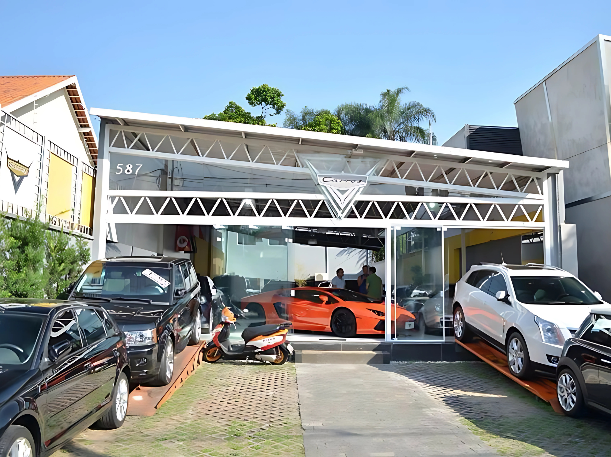

A Mazutti Automóveis foi fundada em 2007, na cidade de Pimenta Bueno, em Rondônia. Desde o início, sempre tivemos como objetivo principal oferecer não apenas veículos, mas também tranquilidade, segurança e confiança para os nossos clientes. Nossa empresa nasceu do sonho de empreendedores locais apaixonados por carros e motos, que enxergaram a necessidade de um atendimento mais humanizado e transparente no setor automotivo da região. Com um espaço simples, mas acolhedor, começamos com apenas alguns veículos no pátio e a vontade de fazer a diferença no mercado regional.
Ao longo dos anos, investimos fortemente na melhoria de nossos serviços, no treinamento de nossa equipe e na ampliação do nosso espaço físico. Hoje, contamos com uma estrutura moderna, confortável e preparada para atender os mais diversos perfis de clientes. Nossa loja é equipada com setores específicos para veículos leves, utilitários e também para motocicletas, todos criteriosamente revisados antes de serem disponibilizados para venda. Acreditamos que um atendimento de qualidade começa com escuta ativa, respeito à necessidade de cada pessoa e compromisso com a verdade.
Trabalhamos com a compra, venda e troca de automóveis e motocicletas de diferentes marcas e modelos. Nosso estoque é atualizado semanalmente com novas opções, sempre prezando pela procedência e pelo bom estado dos veículos. Atendemos desde quem busca o primeiro carro ou moto até famílias que procuram modelos mais espaçosos ou profissionais que precisam de veículos para o dia a dia no trabalho. Além disso, oferecemos avaliação justa no seu usado e garantimos todo o suporte na parte burocrática para que você saia da loja com tudo resolvido.
Nossa missão é muito mais do que vender veículos: queremos realizar sonhos e transformar vidas. Buscamos constantemente oferecer produtos de qualidade, com preços acessíveis e condições facilitadas. Valorizamos o atendimento humanizado, ouvindo com atenção as necessidades de cada cliente e propondo soluções personalizadas. Estamos comprometidos em ser uma empresa que contribui positivamente para a mobilidade urbana e rural da nossa região, promovendo segurança e bem-estar por meio dos nossos serviços.
Visualizamos a Mazutti Automóveis como uma empresa de referência no estado de Rondônia até o final da próxima década. Queremos crescer de forma sustentável, expandindo nossas operações para novas cidades e investindo continuamente em tecnologia e qualificação da equipe. Sonhamos com uma empresa que não apenas comercializa veículos, mas também oferece experiências positivas e duradouras aos nossos clientes. Estamos nos preparando para o futuro, mas sem esquecer nossas raízes e a comunidade que sempre nos apoiou.

A história da Mazutti Automóveis começou de forma simples, com poucos veículos, uma estrutura modesta e muita força de vontade. Nossos fundadores acreditaram no potencial de Pimenta Bueno e apostaram em um atendimento diferenciado, focado na relação de confiança com o cliente. Desde o início, participamos de feiras, eventos da cidade e ações sociais, sempre com o objetivo de estar próximos da comunidade. Ao longo dos anos, enfrentamos desafios, como oscilações no mercado e mudanças econômicas, mas nunca deixamos de acreditar em nosso propósito.
Com o tempo, fomos crescendo e conquistando espaço no mercado regional. A confiança dos nossos clientes nos permitiu expandir a equipe, modernizar nossas instalações e investir em novas tecnologias. Hoje, somos referência não só pela qualidade dos veículos, mas também pela forma como tratamos cada cliente: com respeito, dedicação e atenção aos detalhes. Nossa trajetória é feita de histórias reais, de famílias que compraram seu primeiro carro conosco, de jovens que realizaram o sonho da moto própria, e de profissionais que confiam em nossos veículos para o trabalho do dia a dia.
